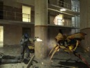
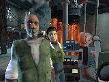

|
 Histoire
Half-Life² Histoire
Half-Life²
Nous savons que le jeu sera divisé en 12 chapitres, découpés
en petites parties comme dans le premier volet d'Half Life, afin
de réduire le temps de chargement global, et de garder une grande
continuité dans le jeu. Chacun de ses chapitres devraient prendre
3 à 4 heures de jeu. Donc en théorie, Half Life 2 devrait être
bien plus long (environ 40h de jeu) que l'original !

Nous
savons de même que Gordon Freeman travaille maintenant
pour le compte du G-Man (le mystérieux homme en costume que
l'on aperçoit à maintes reprises dans Half Life). En
effet, à la fin du premier Half-Life, le G-Man vous proposait
un travail.
 Bien sûr, Gordon Freeman est de retour, mais rien de ce que
nous avons pu voir indique son retour dans les labos de recherche
de Black Mesa (ancien travail de Gordon, avant ce petit incident
technique au cours d'une expérience). Au lieu de cela, nous l'avons vu évoluer
dans une ville de l'Europe de l'Est, appelée City 17 (Traduisez
littéralement par *Ville 17*). Lorsque l'on demande à Valve
les autres lieux dans lesquels se dérouleront les aventures
de Gordon, Gabe Newell (Directeur management de Valve) ne répond
rien d'autre que "Le jeu se déroulera entièrement
sur la Terre". Il n'y aura donc pas d'excursion extra-terrestre
sur la planète Xen, originaire de tous les visiteurs inconnus. Bien sûr, Gordon Freeman est de retour, mais rien de ce que
nous avons pu voir indique son retour dans les labos de recherche
de Black Mesa (ancien travail de Gordon, avant ce petit incident
technique au cours d'une expérience). Au lieu de cela, nous l'avons vu évoluer
dans une ville de l'Europe de l'Est, appelée City 17 (Traduisez
littéralement par *Ville 17*). Lorsque l'on demande à Valve
les autres lieux dans lesquels se dérouleront les aventures
de Gordon, Gabe Newell (Directeur management de Valve) ne répond
rien d'autre que "Le jeu se déroulera entièrement
sur la Terre". Il n'y aura donc pas d'excursion extra-terrestre
sur la planète Xen, originaire de tous les visiteurs inconnus.
Cela dit, il est certain que cela n'aura rien à voir avec la
Terre que nous connaissons; surtout avec une multitude d'aliens tournant
autour de nous. Combien de temps s'est passé depuis l'épisode
de Black Mesa ? Valve n'a pas voulu nous le dire. Pendant tout le jeu,
vous en saurez à peu près autant que Gordon Freeman :
Vous êtes perdu, et vous découvrez l'histoire au fil des
chapitres. Tout le jeu se déroulera in-eye; ne voyant que part
les yeux de Gordon, pas de séquences à la 3ème
personne, pas de séquences en film. Vous ne verrez que ce que
Gordon voit; vous ne l'entendrez même jamais parler. Comme Newell
le dit simplement : "Vous êtes Gordon Freeman".
Tout comme dans le premier volet du jeu, vous êtes aidé par
des personnages extérieurs. L'un des personnage clef est une
femme nommée Alyx Vance, qui, semblerait-il, est une fille d'un
ancien scientifique de Black Mesa ("Un enfant de ce nouveau monde" dit
Lombardi). Si vous vous rappelez de son père, il s'agit d'Eli
(le seul scientifique afro-américain qui apparaissait dans le
jeu); qui revient aussi dans Half-Life 2.Nous en apprenons aussi un
peu sur la mère d'Alyx, qui a été tuée
lors de l'incident de Black Mesa. Et elle est bien au courant en ce
qui concerne l'identité de Gordon... Mais vous n'êtes
vous-même pas sûr de ce que vous croyez.. Aussi, l'agent
de sécurité Barney revient; vous vous étiez enfuis
ensemble de Black Mesa à la fin de Blue Shift.

Nous savons aussi que maintenant vous pourrez vous battre avec
les aliens de Xen, pour des raisons qui n'ont pas été révélées.
Et de la même manière que Half-Life dans lequel vous
combattiez l'armée, vous devrez encore vous battre contre
des humains, le personnel de City 17. Les véhicules seront
présents, et joueront un rôle majeur dans le jeu; ils
ne seront pas là juste pour parcourir une rue; mais vraiment
pour vous déplacer rapidement d'un endroit à un autre,
en étant tout à fait libre de votre destination.
(d'après la preview de GameSpy.com)
|
 |